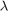
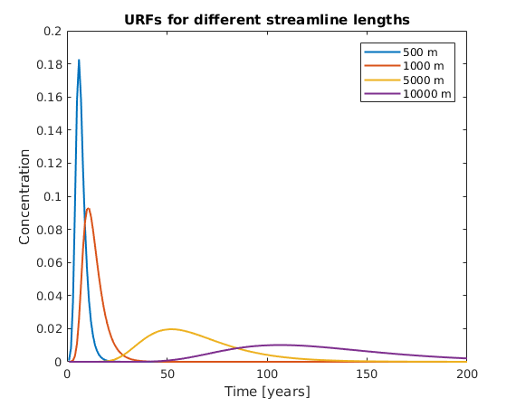
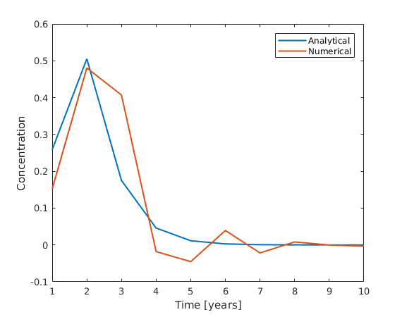
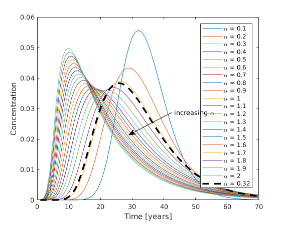
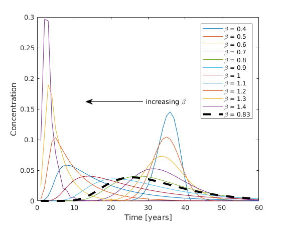

ComputeURF
| main | Tutorials | Functions | website |
Computes the Unit Response Function for a given streamline. This function solves the 1D Advection Dispersion Equation either numericaly or analyticaly using a unit input of unit step at one side and returns the concentration at the other side of the streamline. Using the option structure, parameters such as discretization size, lambda or longitudinal dispersivity can be configured.
Version : 1.0
Author : George Kourakos
email: giorgk@gmail.com
web : http://subsurface.gr/software/msim
Date 2-Mar-2019
Department of Land Air and Water
University of California Davis
Contents
Usage
URF=ComputeURF(XYZ, Vxyz, opt)
Input:
XYZ : Streamline coordinates [Np x 3].
Vxyz : Velocity of streamline points.
opt : An option structure with the following fields:
dx : discretization along streamline
dt : time discretization in years
Ttime : Total simulation time
Lmin : Minimum length for numerical solution. For streamlines with length less than Lmin an analytical solution will be used.
lambda.type : 1->lambda is scalar : 0->variable
lambda.val : if type == 1, decay  = lambda.val(1), if type == 0, decay = lambda.val ( lambda.val has to be equal to Np)
aL.alpha : The longitudinal dispersivity is defined as function of streamline length in the form of aL = alpha*L^beta, where L is the streamline length and the two parameters are defined in a structure where aL.alpha is the alpha parameter. The default value is 0.32
aL.beta : is the beta parameter in the equation above. The default value is 0.83
Regarding the default values see more at Neuman 1990
Output data
URF : Unit response function
Note: The first point in XYZ is the starting point of the backward particle tracking near the CDS (e.g. the wells).
In FEM formulation we assume that the first point is near the land surface, therefore we reverse the order inside the script.
|---v1----|---v2---|----v3-----| ------------------------------------- x1 x2 x3 x4
Examples
Testing different streamline lengths
Using the default values lets compute the Unit Response function for a number of different streamline lengths and plot them.
Sl = [500 1000 5000 10000]; % Units are in km
For velocity we will use a constant value
vel = 0.2; %[m/day]
The total simulation time will be 200 years with 1 year step
opt.Ttime = 200; opt.dt = 1; opt.Lmin = 50;
Lets compute the URFs for the different streamline lenghts. For the discretization we will divide the streamline into 1000 nodes if the distance between the nodes is greater than 1.
n = 10; for ii = 1:length(Sl) opt.dx = max(1, Sl(ii)/1000); x = linspace(0,Sl(ii),10)'; URF(ii, :) = ComputeURF([x zeros(n,2)], vel*ones(10,1), opt); lgnd{ii,1} = [num2str(Sl(ii)) ' m']; end
Let's plot the resuts
plot(URF', 'linewidth', 1.5) title('URFs for different streamline lengths') xlabel('Time [years]') ylabel('Concentration') legend(lgnd);
Numerical vs Analytical solution
Using the default dispersion values we are going to compute the URFs using numerical and analytical method.
For streamline length equal to 100 m we will set the minimum length for numerical solution to 200 m.
x = linspace(0, 100, 10)'; opt.Lmin = 200;
which will force the function to use the analytical solution
URF_analytical = ComputeURF([x zeros(n,2)], vel*ones(10,1), opt);
then reset the same parameter to a smaller value that will force the numerical solution
opt.Lmin = 50; URF_numerical = ComputeURF([x zeros(n,2)], vel*ones(10,1), opt);
As the streamline is very short we will plot only the first 10 years of the simulation.
clf plot(URF_analytical(1:10), 'linewidth', 1.5, 'DisplayName', 'Analytical') hold on plot(URF_numerical(1:10), 'linewidth', 1.5, 'DisplayName', 'Numerical') legend('show') xlabel('Time [years]') ylabel('Concentration')
We can observe that the numerical solution is rather unstable for the given dispersivity values
Sensitivity analysis on despersion coefficients
In this section we will test different values of the alpha and beta parameters and check the effect on the URFs.
We will use a streamline with 2.5 km length and using the default beta value we will simulate a range of alpha values.
x = linspace(0, 2500, 10)'; alphas = 0.1:0.1:2; lgnd = []; for ii = 1:length(alphas) opt.aL.alpha = alphas(ii); URF_a(ii, :) = ComputeURF([x zeros(n,2)], vel*ones(10,1), opt); lgnd{ii,1} = ['\alpha = ' num2str(alphas(ii))]; end clf plot(URF_a(:,1:70)') annotation('textarrow','Position',[0.6 0.5 -0.15 -0.1],'String', 'increasing \alpha') xlabel('Time [years]') ylabel('Concentration')
Lets also compute the URF using the default alpha and beta values and plot it on the top as thicker dashed line
opt.aL.alpha = 0.32; opt.aL.beta = 0.83; URF_d = ComputeURF([x zeros(n,2)], vel*ones(10,1), opt); hold on plot(URF_d(:,1:70), '--k', 'linewidth', 2.5) lgnd{ii+1} = '\alpha = 0.32'; legend(lgnd);
We observe that values smaller than the default tend to shift the URF so that the response come later. In addition we observe that the picks are higher. If we incease the alpha values then the concentrations arrive earlier. It is interesting that the peaks show a highly non linear relation with the alpha value with the extreme values of alpha exhibit higher peaks compared to the default value.
Similarly we keep the alpha constant at its default value and test a range of beta values.
opt.aL.alpha = 0.32; betas = 0.4:0.1:1.4; lgnd = []; for ii = 1:length(betas) opt.aL.beta = betas(ii); URF_b(ii, :) = ComputeURF([x zeros(n,2)], vel*ones(10,1), opt); lgnd{ii,1} = ['\beta = ' num2str(betas(ii))]; end lgnd{ii+1} = '\beta = 0.83';
clf plot(URF_b(:,1:60)') hold on plot(URF_d(:,1:60), '--k', 'linewidth', 3) ylim([0 0.3]) annotation('textarrow','Position',[0.5 0.55 -0.2 -0.0],'String', 'increasing \beta') xlabel('Time [years]') ylabel('Concentration') legend(lgnd);
We observe very similar behaviour as with the alpha parameter, yet the shape and the arrival time is more sensitive to beta parameter.
